Plaça Fontanella, 1 · 03700 Dénia
Dénia
Todos los días, de 8:00 a 17:00
Desayunos, brunch, panadería y encargos. Terraza en una plaza peatonal junto al puerto.
Todos los días, de 8:00 a 17:00
Dénia · Moraira
Desayunos y brunch sin prisa en dos casas: junto al puerto de Dénia y en el centro de Moraira. Casi todo lo hacemos nosotros, desde cero: el pan, los croissants, el requesón de los syrniki y el salmón curado.
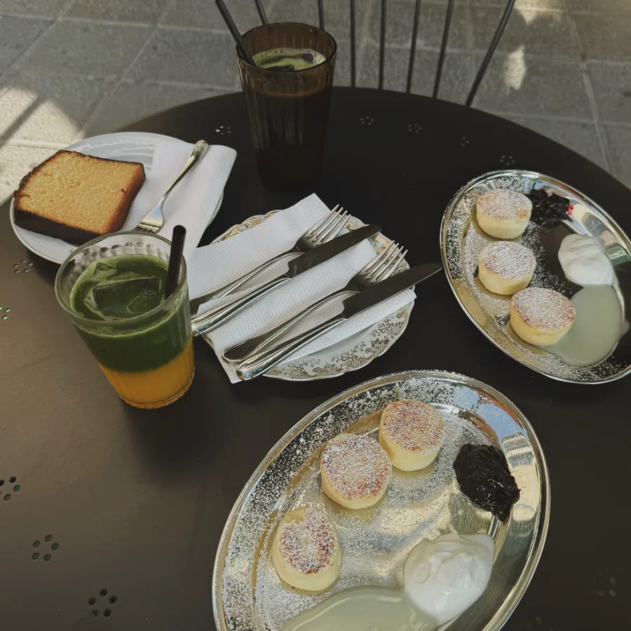
1 2 3 4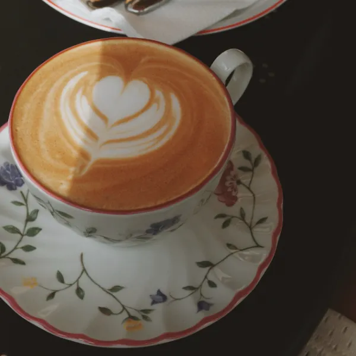
5En esta mesa
En esta mesa: syrniki de requesón casero, mermelada de grosella negra y café en porcelana con flores.
«Se nota que es todo casero y recién preparado.»
«La mejor tarta de queso que probé nunca…»
«¡El pan es sencillamente espectacular!»
Lo más mencionado en Dénia
Notas de Google Maps. Citas literales de reseñas de Dénia; temas y número de reseñas que los mencionan, según Google Maps (noviembre de 2026).
La vitrina
Cada pieza lleva su sello, como la marca que la porcelana lleva debajo del plato: de dónde viene la receta. La vitrina cambia cada día, así que si quieres algo seguro, encárgalo.
Vecrīga, un choux relleno de crema de requesón que lleva el nombre del casco antiguo de Rīga · milhojas con crema de chocolate blanco · pain au tiramisú · pavlova de maracuyá · éclair · brownie con nueces y cerezas · y unas «nueces» de galleta rellenas de leche condensada cocida.
¿Lo quieres entero para una celebración? Llámanos o pregunta en el mostrador.
Llamar a Dénia · 605 45 84 74Precios orientativos por pieza o porción, tomados de nuestra carta. Manda la carta del local.
Desayunos y brunch
Todo lo salado va sobre nuestro pan de masa madre. El salmón lo curamos en casa, y el requesón de los syrniki también lo hacemos aquí.
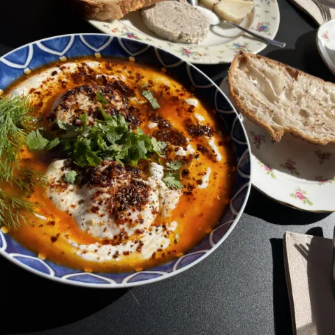
Huevos turcos 11,00 €
Yogur con ajo, huevos escalfados y mantequilla especiada
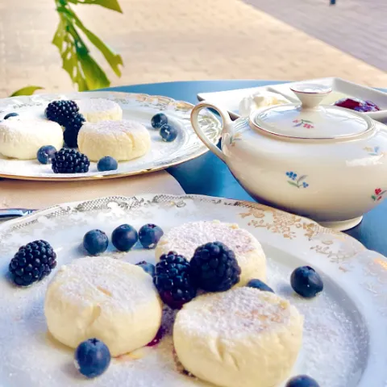
Syrniki 13,50 €
Tortitas de requesón hecho en casa
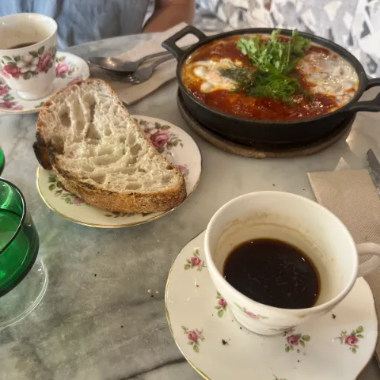
Shakshuka 12,50 €
Picante, con pan para mojar
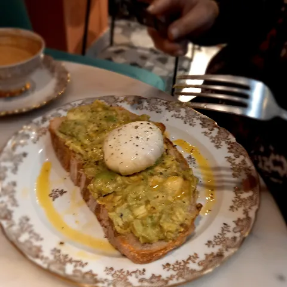
Aguacate y huevo escalfado 6,50 + 1,70 €
Sobre masa madre
Huevos turcos Popular en Google11,00
Yogur griego con ajo y menta, dos huevos escalfados y mantequilla especiada
Shakshuka12,50
Huevos en salsa de tomate picante, con pan de masa madre
Tostada de salmón curado en casa10,50
Con queso crema al eneldo y ajo
Tostada de huevos revueltos10,50
Huevos esponjosos, espárragos salteados al limón y queso Comté
Huevo pasado por agua9,50
Con mantequilla de trufa, queso y pan tostado
Tostada de aguacate6,50
Con el extra que quieras
Tostada con tomate5,50
Con el extra que quieras
Syrniki13,50
Tortitas de requesón hecho en casa, con crema agria y leche condensada
Granola casera8,90
Con yogur griego, fruta fresca y miel de castaño
Porridge de avena6,20
En agua o bebida de avena, con frutos rojos, yogur griego y miel de castaño
Açaí bowl11,50
Con granola casera, fruta de temporada y coco
Croissant con mermelada3,60
Mermelada de fresa y mantequilla francesa
Tortilla11,50
Con jamón casero y queso trufado
Truffle blanche9,90
Pan crujiente con pavo, queso de oveja trufado y gouda fundido
Ensaladilla rusa8,50
Con ternera casera
Paté de pollo casero7,50
Con pan de masa madre
Carta y precios de Dénia, IVA incluido. Orientativos: manda la carta del local, y en Moraira puede variar.
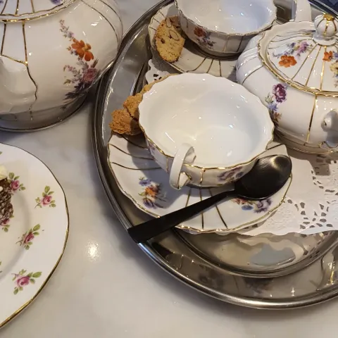
Café de especialidad tostado para nosotros según el estándar de la Specialty Coffee Association. Para los cafés con leche usamos grano de Brasil: suave, con notas de chocolate y frutos secos. Tenemos bebida de avena.
Casi todos nuestros productos contienen alérgenos (gluten, lácteos, huevo, frutos secos…). Pregunta al equipo antes de pedir.
Servimos en porcelana antigua (inglesa, bávara, francesa), con rosas y filos dorados. Cada mesa recibe piezas distintas, así que el café de mañana no se parecerá al de hoy.
«Es divertido ver la variedad de tazas»
Reseña en Google
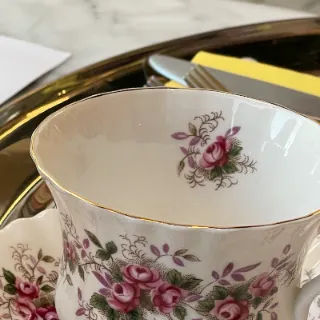
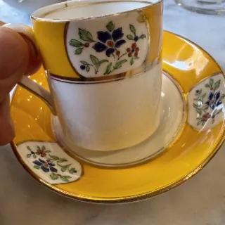
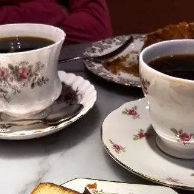
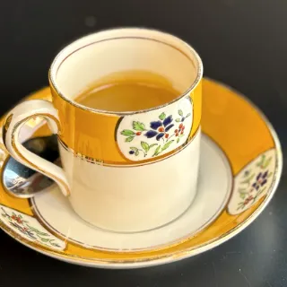
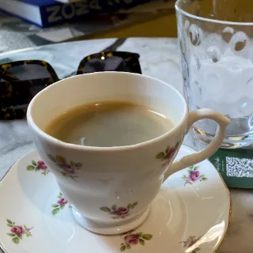
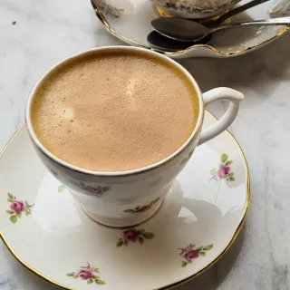
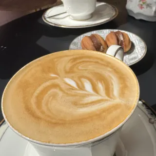
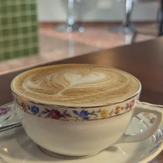
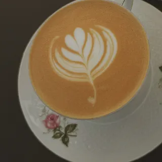
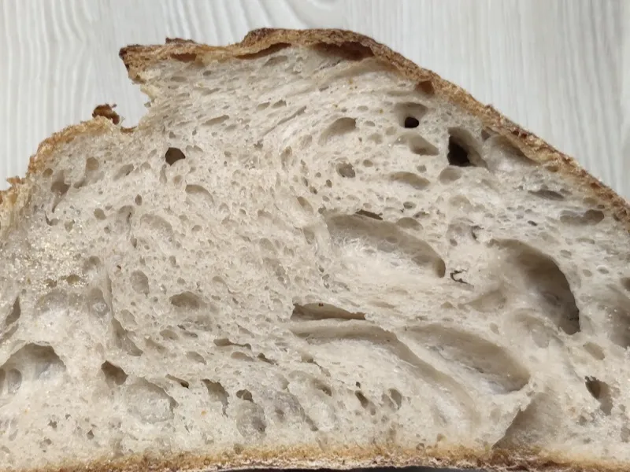
Pan y encargos
Horneamos hogazas de masa madre y las vendemos enteras o por mitades. Es el mismo pan de nuestras tostadas, y el de nueces tiene fans:
«Probablemente el mejor pan que he probado en mi vida»
Reseña en Google sobre el pan de nueces
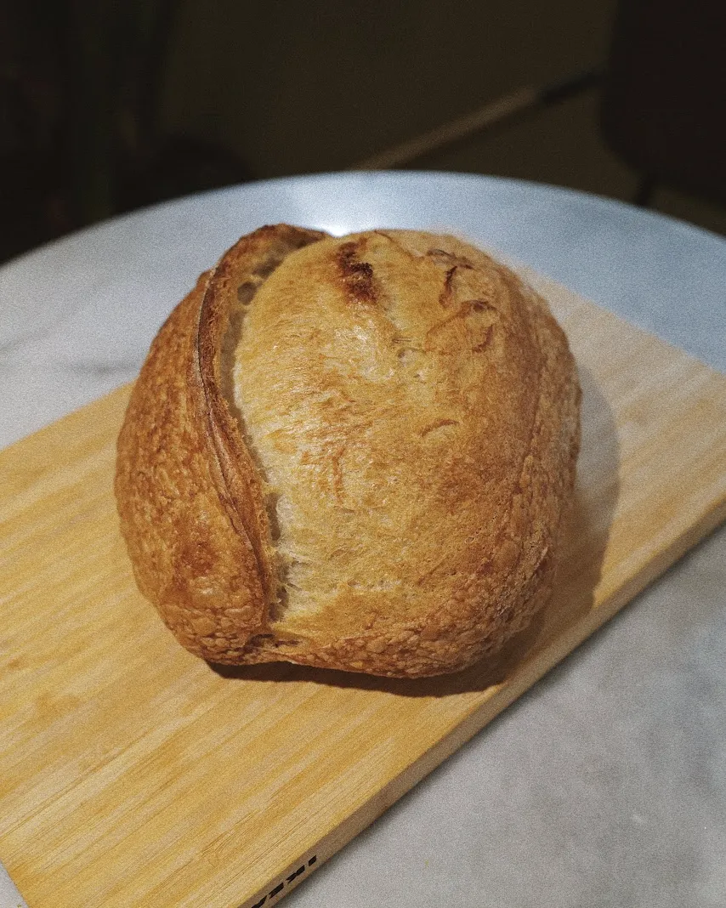
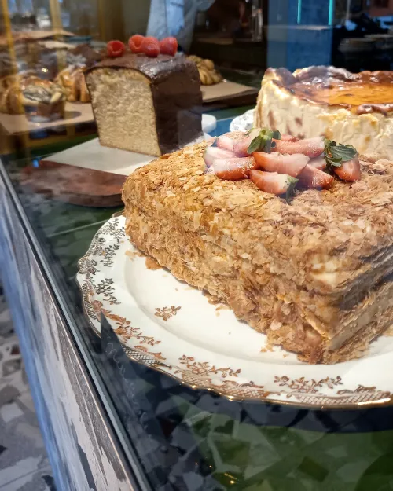
Tartas enteras (medovik, tarta de queso, carrot cake…) y hogazas reservadas. Llámanos o pregúntanos en el mostrador y lo dejamos preparado.
Encargar en Dénia · 605 45 84 74¿Sin tiempo para pasar? También estamos en Glovo, para recoger o a domicilio.
Nuestros locales
La misma panadería y el mismo café en los dos. En Moraira, además, cenas de miércoles a domingo. Elige el tuyo para ver horario, cómo llegar y qué hay.
Plaça Fontanella, 1 · 03700 Dénia
Todos los días, de 8:00 a 17:00
Desayunos, brunch, panadería y encargos. Terraza en una plaza peatonal junto al puerto.
Todos los días, de 8:00 a 17:00
Av. de la Paz, 4 · 03724 Moraira
Lun–mar 8:00–15:30 · mié–dom 8:00–22:00, cocina de noche desde las 16:00
Panadería y café por la mañana; de miércoles a domingo, cocina de noche con vino natural. Reserva online.
Lun–mar 8:00–15:30 · mié–dom 8:00–22:00, cocina de noche desde las 16:00